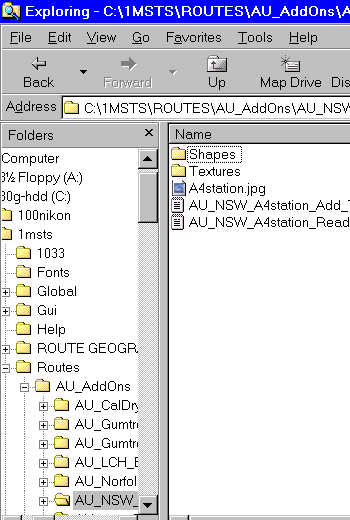

INTRODUCTION
While working on a route I started to find some "issues" with existing shapes for route development:
- a lack of constant nomenclature meant that something like "factory3" (for example) could be anything from a small country warehouse to a large industrial complex;
- the .ACE files didn't necessarily have the same or even vaguely similar names to the .S and .SD files (eg "ukcrossgate.s" looks for "levelcrossing.ace") . After a couple of weeks, it became impossible to remember the filenames, necessitating running the .S file through SFM to uncompress it, then looking within the .S file at the names of the ACE files required for that model shape - most unsatisfactory;
- no consistency on where to find the data required for adding the item to a .REF file; and
- no consistency of including, naming or placing readme.txt files, so an UNZIP could over-write a previous readme.txt which had been placed anywhere from \Microsoft Games\ to \Routes\MyRoute.
I therefore developed a standard which I'm using on all structures and infrastructure items at this site. I will still be using an installer, but the end-user will still need to move shape and texture files as well add the model's details to the .REF file, but this procedure will be made as consistent and simple as possible.
Every model on this page will open into a folder within the "Routes" folder of MSTS. This folder will be known as "AU_AddOns " and each model will install into its own folder underneath. Each model's .S, .SD, .ACE, readme, add_to_ref files will be consistently and clearly named so that you can identify all the components of the model; all WILL begin with AU_,
something I introduced when this overall web site was initiated.
See the image below for an example.

The "readme.txt" and the "add_to_ref.txt" will remain in the folder, shapes and textures will be in their own folders. This means if you need to re-install a model, or you wish to acknowledge the copyright owner in the route you will be distributing, you will have no trouble in finding this information.
The readme.txt file will contain a folder map of what files go where as well as the classification and the name you will find it under when you click on Placement | More in RE (which brings up the "Object Selector" pane shown below).
I hope that this will assist the route builders in keeping track of their Australian model add-ons.
DOWNLOAD INSTRUCTIONS
- Click on the Image beside the name of the model you are interested in;
- the page that opens gives you a picture, a brief description and a link to download an .EXE file: download the .EXE file to a folder of your choice, perhaps "My Downloads". Then browse to the folder with Windows Explorer and double-click on the file to commence its installation. Click on "Next" or "Ok" to commence the installation and read the readme.txt printed on the screen;
- you will then need to copy the shapes to the route's Shapes folder and the textures to the Texture folder. The add_to_ref file contains the fragment of code that needs to be added to the route's .REF file. Thereafter it's a simple matter to find the model in the Placement | More section of Route Editor.